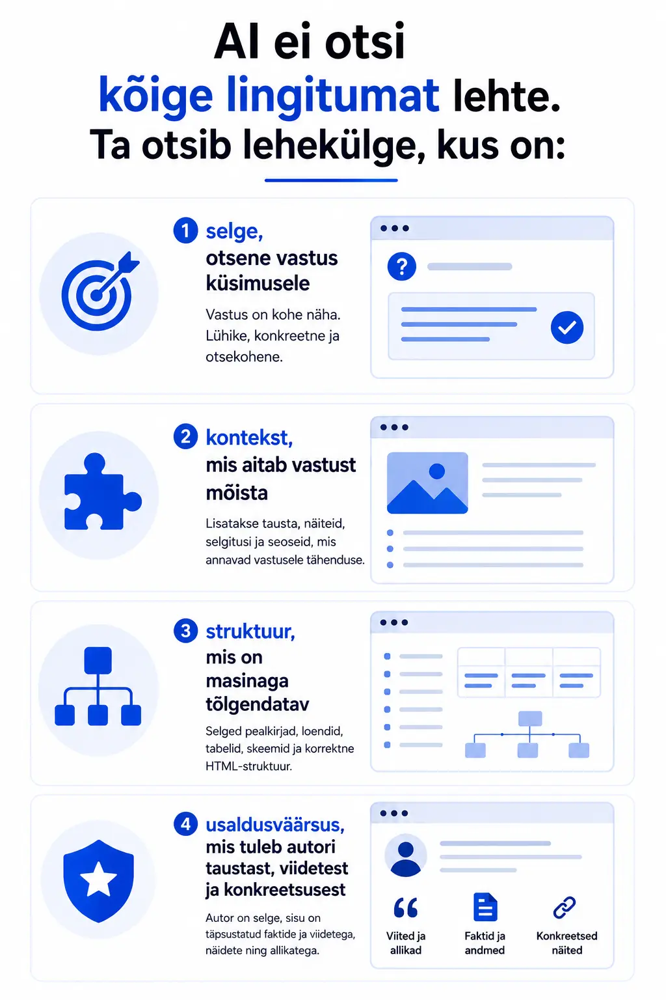

Vaid mõned aastad tagasi oli SEO mäng, milles ma ennast hästi tundsin. Leiad õiged märksõnad, kirjutad neile teksti ümber, ehitad ja kogud linke, ja ootad. Google premeeris kannatlikkust. Süsteem töötas. Mitte perfektselt, aga täiesti ennustatavalt.
Siis juhtus midagi, mida me kõik nägime, aga paljud ei tahtnud uskuda: inimesed lõpetasid guugeldamise. Mitte sada protsenti, aga osaliselt. Nad hakkasid küsimusi esitama. ChatGPT-lt, Claude'ilt, Gemini'lt, Perplexity'lt. "Milline raamatupidamistarkvara sobib väikeettevõttele?" "Milline on parim viis endale väike e-pood teha?" "Kas Eestis on vaja käibemaksukohustuslane olla, kui ületan 40 000 eurot aastas?"
Vastused tulevad kohe. Ilma reklaamideta. Ilma kümmet erinevat blogi läbi klõpsimata.
Ja korraga ongi küsimus hoopis teine: kas sinu bränd on seal vastuses sees?
Mis täpselt on muutunud?
SEO-s on viimased kahekümmend viis aastat põhimõtteliselt üks küsimus domineerinud: kuidas saada Google'i esimesele lehele? Esimeseks otsingu vastustes. Sellele on ehitatud terved agentuurid, tööriistad, sertifikaadiprogrammid, konverentsid.
See küsimus ise pole küll kuhugi kadunud. Google on endiselt suur. Aga otsingumootor ei ole enam see ainus koht, kus inimene vastust otsib. Ja oluline on mõista, miks see muutus on põhimõtteline, mitte ajutine nähtus.
AI-assistendid ei anna "otsingutulemusi". Nad annavad konkreetseid vastuseid. Ja neil vastustel on väga erinevad alused võrreldes Google'i esikümne tulemustega. Nad ei vaata, kellel on kõige rohkem backlinke. Nad vaatavad, kellel on kõige usaldusväärsem, selgeim, struktureeritum ja konteksti rikkam sisu.
Teise muutusena paistavad silma null-klikid. Isegi Google itse kuvab nüüd by default enamuse otsingutulemusi otse otsinguribale — "Featured Snippet", "AI Overview", "People Also Ask". Inimene saab vastuse ja ei klikigi edasi. Link sinu veebilehele võib küll seal olla, aga kuna vastus on kohe silme ees, siis sinu lingile pole vajadust klikkida.
Kolmas muutus on nüanssirikkam: inimeste otsingukäitumine on lagunenud fragmentideks. Ühed küsivad Google'ist. Teised TikTokist. Kolmandad Redditi foorumitest. Neljandad küsivad otse AI-lt. See ei ole kaos. See on uus normaalsus.
Miks traditsiooniline SEO ei ole enam piisav?

Olgu see asi kohe selge: traditsiooniline SEO ei ole nüüdsest täiesti kasutu. Aga see, millest enne piisas, ei pruugi enam olla piisav. Ja see on oluline vahe.
Klassikaline SEO keskendub peaasjalikult kahele asjale: märksõnadele ja autoriteedile (mõõdetuna linkide kaudu). Need on endiselt olulised. Aga mõtle, kuidas AI-mudel otsustab, millisest allikast midagi soovitada.
AI ei otsi kõige lingitumat lehte. Ta otsib lehekülge, kus on:
- selge, otsene vastus küsimusele;
- kontekst, mis aitab vastust mõista;
- struktuur, mis on masinaga tõlgendatav;
- usaldusväärsus, mis tuleb autori taustast, viidetest ja konkreetsusest.
Kui sinu sisu on kirjutatud nii, et märksõnatihedus on optimeeritud, aga küsimusele otsest vastust ei anta, siis AI jätab selle vaikimisi kõrvale ja läheb edasi. See on lihtne tõde, aga paljudele ettevõtetele ikka veel vastukarva.
Lisaks on probleem, mida võiks nimetada "AI ignoreerimiseks". Paljud ettevõtted on aastaid tootnud SEO-sisu, mis on sisuliselt ideaalse täpsusega, kuid seda pole kunagi päriselt struktureeritud nii, et AI saaks sealt usaldusväärset fakti otse välja tõmmata. Google indekseerib selle. AI lükkab selle kõrvale.
Mis on AINO ja mida see lisab?
AINO tähendab AI Nähtavuse Optimeerimist. Optimeerimine, mis on mõeldud AI-ajastul nähtavaks saamisele.
See ei ole SEO-vastane liikumine. See on SEO loomulik järg, mis arvestab uue tegelikkusega. Osa sinu potentsiaalsetest klientidest küsib vastust AI masinalt, mitte otsingumootorilt. Ja wenn sinu bränd ei ole selles vastuses, siis sind ei ole nende jaoks olemas.
AINO praktika põhineb neljal vaieldamatul sambal:
- Struktureeritud sisu, kiired vastused: AI-mudelid armastavad selgeid vastuseid. "Mis on X?" ja kohe esimeses lauses vastus. "Kuidas teha Y?" ja kohe selge sammsammuline juhis. Esmalt vastus, siis kontekst.
- Autoriteet läbi tõendite: Kes kirjutas? Mis on tema taust? Millal uuendati? Kas on ka viiteid? AI-mudelid hindavad usaldusväärsust läbi konkreetsete märkide ning brändi mainet digitaalses maailmas tervikuna.
- Mitmekanaliline esindatus: AINO tähendab, et sinu bränd on ära märkimist väärt erinevates kanalites: foorumites, uudisteplatvormidel, YouTube'is, LinkedInis, valdkondlikes väljaannetes. AI-mudelid treenivad end kõigil neil andmetel.
- Selge positsioneering: Kes te olete? Mida te teete? Kellele? Miks teiega tegemist teha? Kui sellele ei saa masin kolme lausega vastata, ei räägi ta sinust.
Kuidas SEO ja AINO koos töötavad?
Siin on koht, kus paljud hakkavad otsima kas/või vastust. Kas SEO või AINO? Kas Google või AI? Vastus on hoopis: ja.
Google on endiselt domineeriv otsingumootor. Inimesed kasutavad seda igapäevaselt. SEO-l on oma koht, oma tööriistad, oma loogika ja see ei ole kuhugi kadumas. Aga nagu e-kaubanduses oli kord küsimus "kas on vaja veebipoodi?", on praegu küsimus "kas oled optimeeritud ka AI-kanalitele?"
Praktikas tähendab see, et hea sisu arhitektuur teenib mõlemat:
- Sisu, mis vastab küsimusele selgelt, toimib hästi nii Featured Snippet'is kui ka AI vastuses.
- Autoriteetne autori profiil ja viited suurendavad usaldust nii Google E-E-A-T raamistiku kui ka AI mudeli jaoks.
- Regulaarselt uuendatud ning täpne sisu hoiab sind mõlemas kanalis pildil.
Asi, mida SEO üksi ei anna, on mitmekanaliline jälg. Seda tuleb ehitada teadlikult. Sisustrateegiaga, mis läheb kaugemale sinu veebilehest.
Praktiline kokkuvõte: kust siis alustada?
Kui sa oled ettevõte, kes tegeleb SEO-ga, aga pole veel AINO-ga tegelenud, siis esimene samm on ausus oma praeguse sisu kohta.
Küsi endalt: kui keegi küsib AI-lt küsimuse, millele minu toode või teenus on parim vastus, siis kas minu bränd tuleb seal esile? Kas minu sisu on struktureeritud nii, et AI saab sealt usaldusväärse vastuse otse "välja tõmmata"?
AINO ei tähenda kõige ümber tegemist. See tähendab olemasoleva sisu ülevaatamist läbi uue prisma. Mõne strateegilise asja lisamist. Mitmekanalilise jälje ehitamist. Ja pikema vaate võtmist, sest AI-ajastul ei ole tegu nädalate kampaaniaga, vaid digitaalse autoriteedi ehitamisega kuude ning aastate jooksul.
SEO on elus. Aga ta elab nüüd koos uue naabriga.
Feliks Stavitski on AINO entusiast. AINO aitab ettevõtetel olla nähtav seal, kus niiden klient täna vastuseid otsib — olgu see Google, ChatGPT, Claude või midagi muud, mis võib tulla juba homme.